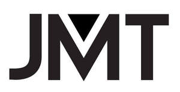

Trade Mark Journal No.2025/009 28 February 2025
UK00004137839 17 December 2024 (7,9,10)

- Class 7
- Electrically driven motors, drives, actuators and pumps, including brushed motors, brushless motors, direct drive motors, linear motors, servo motors, stepper motors, reluctance motors, piezo-electric motors, micro motors and geared motors; motorised actuators for opening, closing, locking, moving and controlling electric and electronic apparatus and instruments; servo-motors and servo-motorised actuators; electrically driven motors, drives and actuators for use in medical, surgical, dental, veterinary, and therapeutic apparatus, devices, tools, and instruments; electrically driven motors, drives and actuators for powered medical, surgical, dental, veterinary, and therapeutic apparatus, devices, tools, and instruments; electrically driven motors, drives and actuators for use in medication delivery to the body by paroral, subcutaneous, intravenous, transmucosal and inhalation in liquid, solid or gaseous forms; electrically driven motors, drives and actuators for dispensing medical and pharmaceutical preparations to the body, including medical dosing systems, auto-injectors, insulin pumps and for needle insertion and extraction; electrically driven motors, drives and actuators for use in motion subsystems for medication dosing and needle movement; electrically driven motors, drives and actuators for use in powered medical, surgical, dental, veterinary, and therapeutic apparatus, tools, and instruments, for cannula or needle insertion and cannula or needle extraction; electrically driven motors, drives, actuators, valves and pumps for use in cutters for endoscopic, colonoscopic, laparoscopic and thorascopic procedures; electrically driven motors, drives and actuators for use in apparatus, devices, tools, and instruments for endoscopic, colonoscopic, laparoscopic and thorascopic procedures; electrically driven motors, drives and actuators for use in surgical robots and inhalation systems, including nebulizers, inhalers and CPAP machines; gears, pinions, cogs, worms and worm wheels, gearboxes, gear trains and transmission systems for machines and motors; electric motor driven fans and blowers; valves being parts of machines; parts and fittings for all the aforesaid goods.
- Class 9
- Electronic circuits including flexible printed electronic circuits; electric and electronic sensors; electronic controllers for electric motors; electric and electronic solenoids, solenoid switches and solenoid valves; electric and electronic switches; motor controllers including brushed motor controllers, brushless motor controllers, piezo-electric motor controllers, stepper motor controllers, noise suppression circuits, motor protection relays; electric actuators for opening, closing, locking, moving and controlling electric and electronic apparatus and instruments; servo-motors and servo-motorised actuators; iris diaphragms and lens shutters; parts and fittings for all of the aforesaid goods.
- Class 10
- Medical, surgical, dental, veterinary, and therapeutic apparatus, devices, tools, and instruments; valves and pumps for use in medical, surgical, dental, veterinary, and therapeutic apparatus, devices, tools, and instruments; valves and pumps for use in patient care apparatus, devices, tools, and instruments; valves and pumps for use in medication delivery to the body by paroral, subcutaneous, intravenous, transmucosal and inhalation in liquid, solid or gaseous forms; valves and pumps for dispensing medical and pharmaceutical preparations to the body, including medical dosing systems, auto-injectors, insulin pumps, and for needle or cannula insertion and extraction; valves and pumps for use in motion subsystems for medication dosing and needle movement; valves and pumps for use in cutters for endoscopic, colonoscopic, laparoscopic and thorascopic procedures; valves and pumps for use in apparatus, devices, tools, and instruments for endoscopic, colonoscopic, laparoscopic and thorascopic procedures; valves and pumps for use in surgical robots and inhalation systems, including nebulizers, inhalers and CPAP machines; medical pumps; rotary and reciprocating pumps for medical use; pumps for medical use, including diaphragm pumps, elastomeric pumps, hemo pumps, infusion pumps, intrathecal pumps, nebulizer pumps, inhaler pumps, CPAP pumps, peristaltic pumps, ventilator pumps and oxygen concentrator pumps; pumps for medical dosing systems, including auto-injectors, insulin pumps, and syringe driver pumps; apparatus for monitoring vital signs; sensor apparatus for medical use in monitoring the vital signs of patients; sensors for medical, surgical and therapeutic use, including neuro sensors, oximetry sensors, cardio sensors, ECG sensors, EEG sensors, motion and orientation sensors, humidity sensors, temperature sensors, photo-optic sensors and force sensors; medical electrodes; diagnostic electrodes; medical apparatus for testing blood glucose; sensors for medical use including neuropathy sensors; blood glucose strips; parts and fittings for all of the aforesaid goods.
Johnson Medtech (HK) Limited
Representative: Albright IP Limited